Cookbook
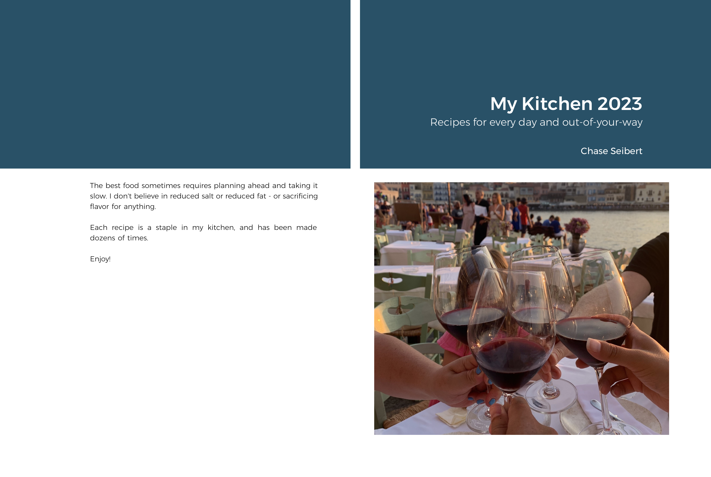
A personal recipe book compiled from LaTeX into a browsable website and a print-ready volume.
Independent software · San Francisco
A living collection of apps, tools, and experiments by Chase Seibert—made to solve real problems, learn new platforms, and occasionally scratch a very specific itch.
↓11 projects and counting

A personal recipe book compiled from LaTeX into a browsable website and a print-ready volume.
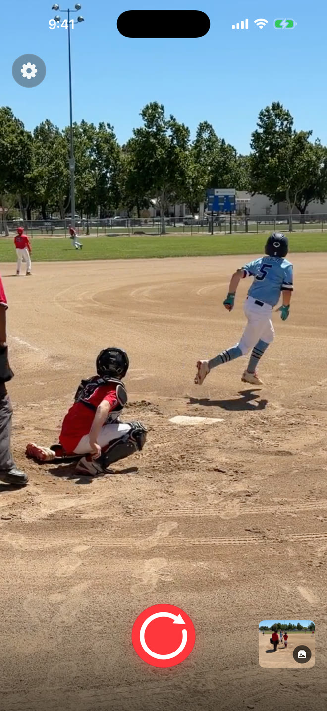
An iPhone camera that keeps a rolling video buffer, so the moment before you tap record is never lost.
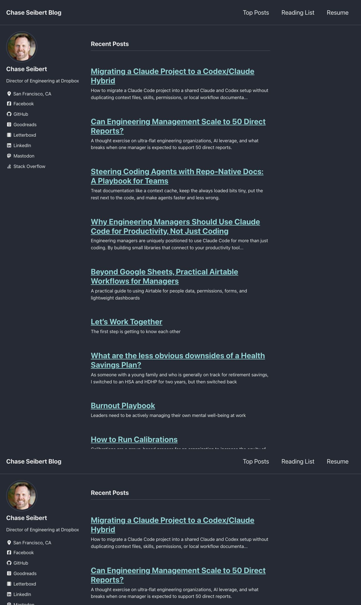
Notes and playbooks about engineering leadership, management systems, software, and the future of work.
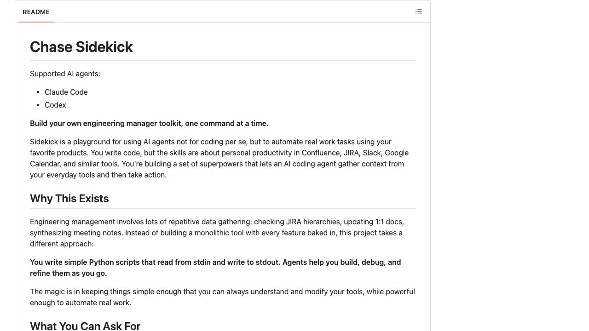
A composable set of agent skills that turns repetitive engineering-management work into reusable workflows.
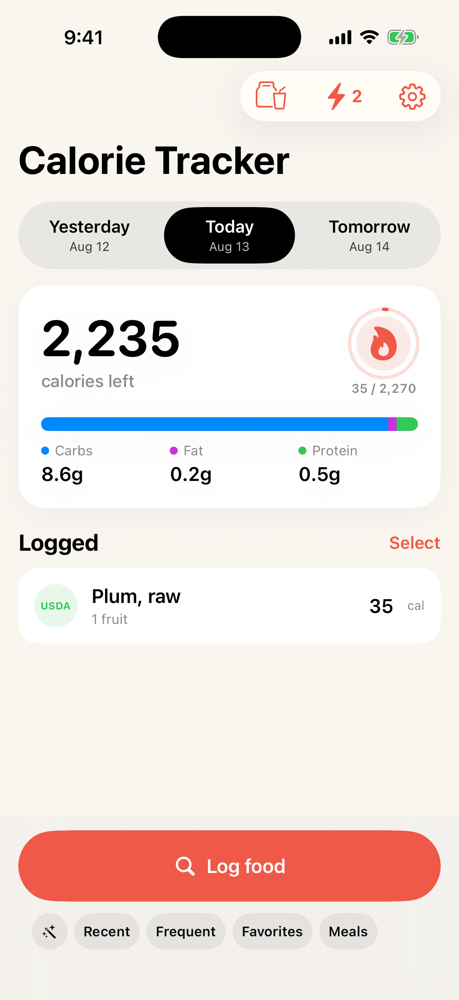
A fast, local-first calorie and macro diary with offline food search, saved meals, trends, and streaks.
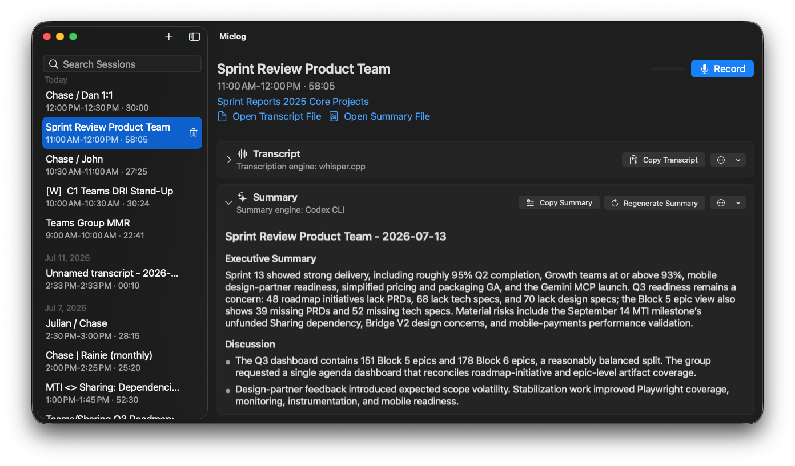
A native meeting recorder that turns microphone audio into timestamped transcripts and useful summaries.
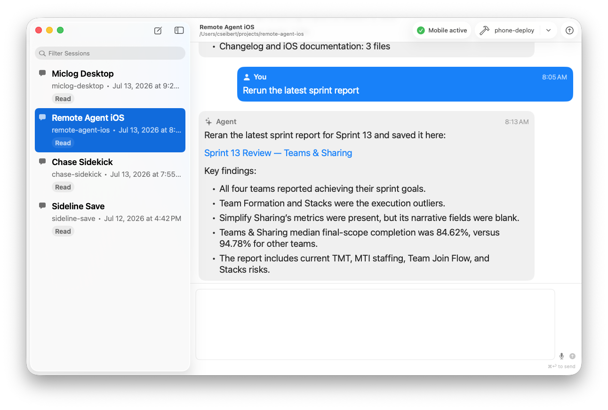
A native Mac host and mobile client that keeps Codex projects within reach from an iPhone or iPad.
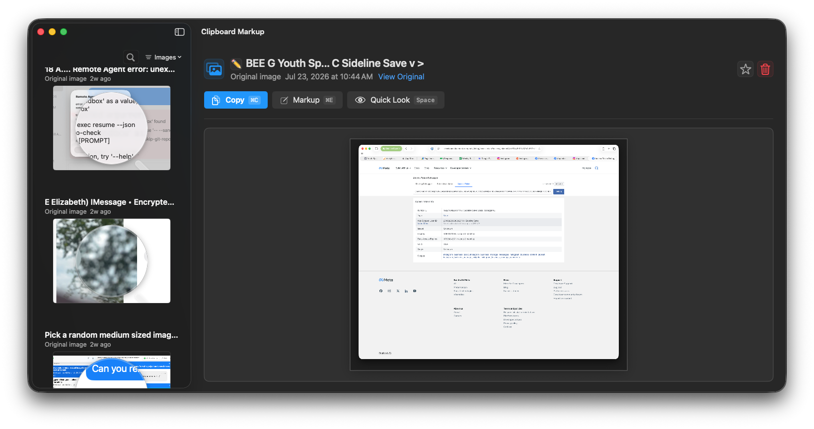
Clipboard history for text and images, with search, favorites, OCR, and quick screenshot annotation.
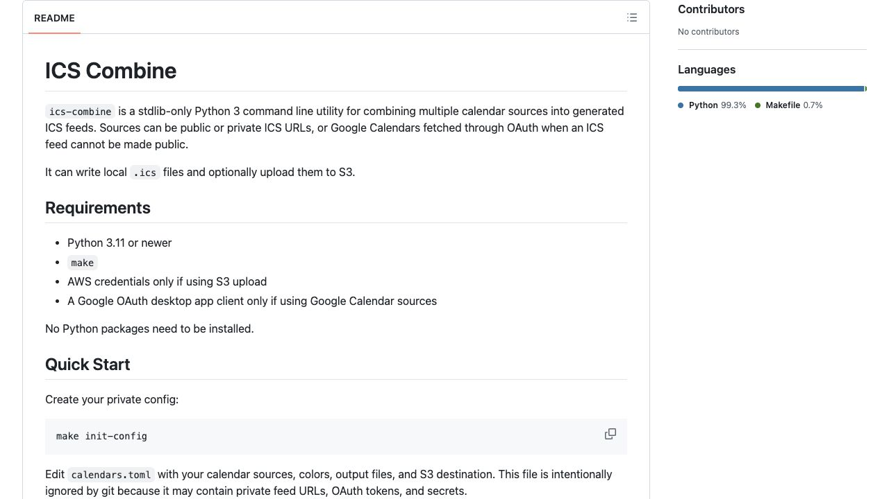
A zero-dependency utility for combining, filtering, color-coding, and publishing calendar feeds.
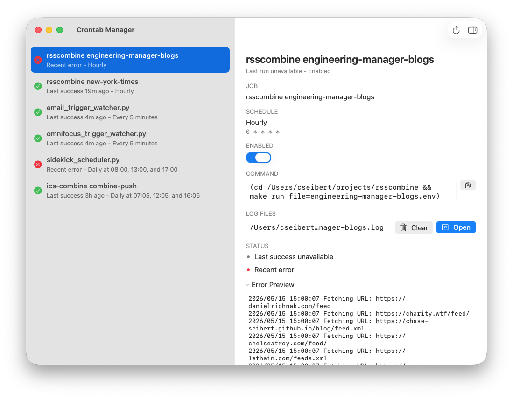
A friendly native interface for inspecting scheduled jobs, reading logs, and safely editing a crontab.
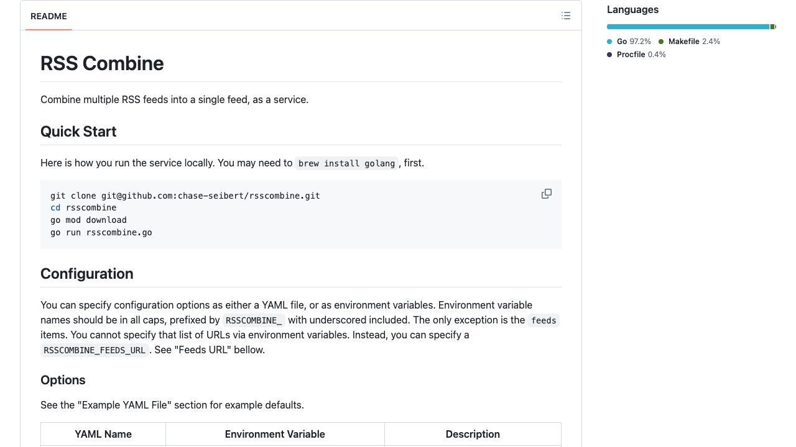
A small service that gathers many RSS sources into one configurable feed for readers and automations.